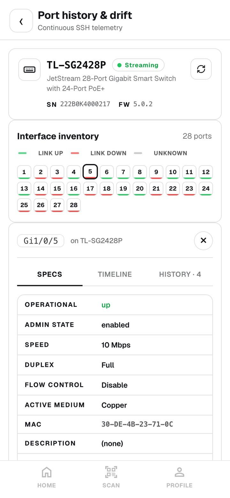
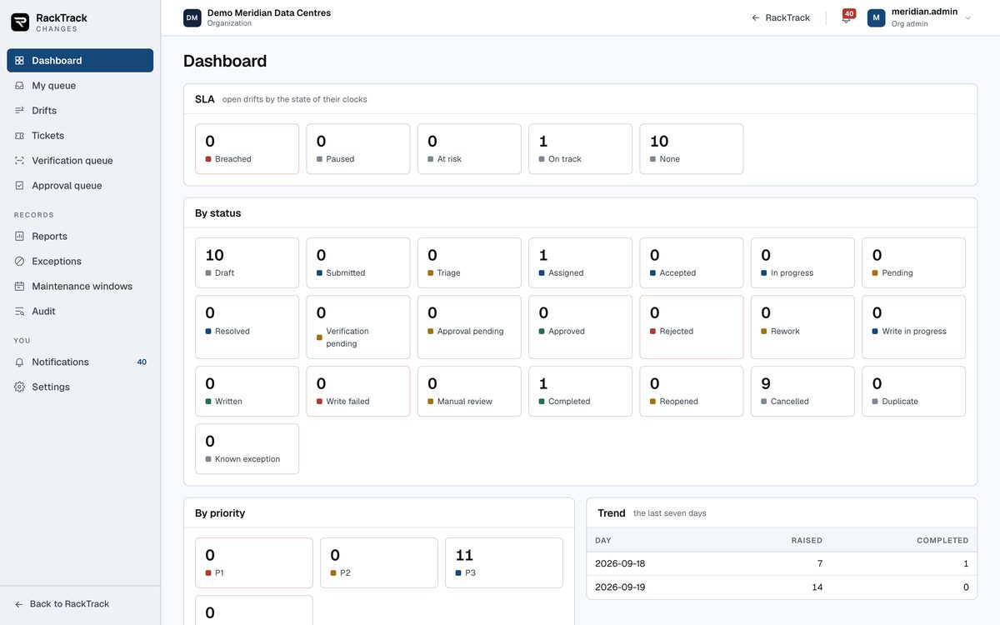
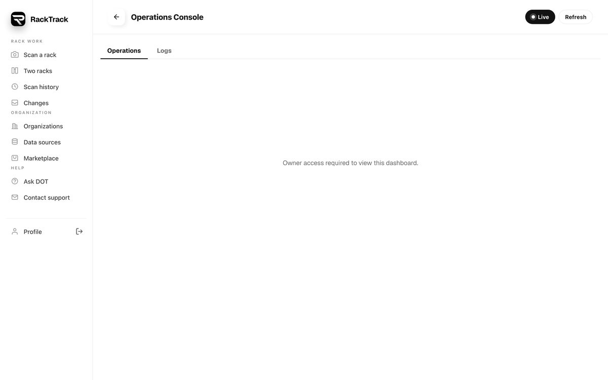

01 - What RackTrack is
A rack photograph, turned into something a record can be checked against
A data centre keeps its truth in three places that never agree: the equipment bolted into the cabinet, what the switches say about themselves, and what the asset record claims. RackTrack reads the first with a camera, asks the second over the network, and compares both with the third - then makes a person decide before anything is written down.
The three witnesses, and what each one actually knows
The single rule everything else follows
Every design decision in this product comes back to one sentence, written into the code that reads a photograph: an empty slot is not a device, and creating one would be inventing hardware - which is the single thing this application exists not to do.
Nothing is invented
A value no source stated is never written, and never cleared on the way past. A guess is shown as a guess, on screen, and stops there.
Nothing is deleted
There is no delete path to a customer's record anywhere in the product. Equipment that has vanished from a rack is reported for a person to judge.
Nothing is written to a switch
The network layer implements reading only. The write command was deliberately left out, so the guarantee is structural rather than a matter of discipline.
Who uses it
| Person | Where they are | What they do |
|---|---|---|
| Technician | Standing at the cabinet, holding a phone | Photographs the rack, reads the switches, checks the result against the record, and hands the differences to their admin. Approves nothing. |
| Admin | At a desk | Hands each difference to a named person, waits for the answer, then approves or rejects it and runs the write. |
| Approver | At a desk | Signs off changes. May never approve work they resolved themselves. |
| Auditor | Anywhere | Reads everything and writes nothing, not even a comment. |
Three applications, one server, one sign-in
The field application
Android, iPhone and the same thing in a browser. Photograph a rack, read its switches, see what differs, hand it on. This is the technician's whole world, and it stays uncluttered on purpose.
RackTrack Changes
The desk half: triage, assignment, tickets, approvals, clocks, reports and the audit trail. Its own screens because the manager asked that the scanning application stay about scanning - but the same server, the same database and the same sign-in, so it opens already signed in.
The portal
For the people who run RackTrack for an organisation: what has been scanned, by whom, which switches answered, who has which role. It watches and manages. It deliberately does not decide - approvals are not there.
The vision models run on the server. The switch reading runs on the phone, because the phone is the only thing standing on the customer's own network.
02 - Reading a rack from a photo
From one photograph to a shelf-by-shelf inventory
A person points a phone at an open cabinet and takes one picture. What comes back is every shelf numbered the way the data centre numbers it, every box placed on its shelf, every socket counted, and every label that could be read - with an honest gap wherever the photograph could not answer.


Why the shelves are read and not measured
A rack's shelves are identical in the real world, so the obvious approach - measure one shelf and tile that height down the picture - looks right and is wrong. A camera is almost never square on to a cabinet, so the near shelves are taller in the image than the far ones, the tiling drifts as it descends, and the boundary ends up slicing through the middle of a panel. A model trained on rack frames, rails and shelves reads the rows where they actually are. Measured over 24 photographs it lands within a tenth of a shelf; the tiled grid was more than twice as far out.
Two corrections came from your own rack this week. The cabinet's frame runs on past the bottom shelf into the plinth and the castors, and the ladder followed it - adding three rows of floor and numbering every device three shelves too high. The ladder now stops at the cross rail, because nothing mounts past it. And a patch panel's cords hang downward and stretch its outline with them, so a panel that sat across two shelves was being placed one shelf too low; a panel now takes the best run of adjacent shelves, and a near tie goes to the higher one, because cords pull an outline down and never up.
Before anything is analysed: refusing a photograph that cannot answer honestly
Four things are checked on the image itself first - black bands down the sides that mean a screenshot, a tilt beyond about six degrees, rails that disagree about where the cabinet is, and a shot taken from so far to one side that the shelves converge. Separately, a trained classifier judges cable clutter, because the obvious rule of thumb misfires both ways: a rack of brightly labelled equipment reads as clutter, while a wall of grey cables - the common case - barely registers. A warning lets the person carry on; only genuinely severe clutter asks for another photograph, and offers to take the rack in sections.
What each model contributes
| Model | What it answers | Where its limits are |
|---|---|---|
| Rack and shelves | The cabinet frame, its rails, and every shelf as its own band | A closed door, a badly angled shot, or a cabinet photographed from far to one side |
| Devices | Where each box starts and ends, and what kind of thing it is | Cable managers hidden behind cables read as an unnamed row; a white firewall above a black switch can swap their names |
| Ports | Every socket on a faceplate, counted and typed | Sockets hidden behind a bundle of cables are not invented - they simply are not counted |
| Patch panels | Panel sockets specifically, including fibre | Trained separately because the switch model, pressed into service on panels, once saw 31 sockets and invented 17 |
| Labels and faceplates | The make, the model and the rack's own label, read as text | A dirty, angled or reflective sticker; a rack label on tape at the top of a cabinet |
| Cables | Which sockets have something plugged into them | Colour and type only, never where the other end goes |
Two questions about a socket, asked by two different models
One model answers only what kind of socket it is - copper, fibre, console, management, or a position with nothing fitted in it. A second answers only whether something is plugged in. They are kept apart deliberately: the type model carries no signal about cables, and the status model carries no signal about types. Sockets are then numbered the way a faceplate is actually printed - odd along the top, even along the bottom, column by column - and a panel's row is numbered straight across.
The cable classifier is the clearest example of the discipline in this product. It recognises fourteen cable colours and connector families, and it has no "no cable" answer at all - so its confidence can be high on a crop with nothing in it. It is therefore never allowed to decide whether a socket is occupied. That answer comes only from the status model, and a socket the status model did not measure stays unknown and is said to be unknown.
A rack too tall for one photograph
Several vertical shots are joined by matching the horizontal edges - cable rows, panel borders, indicator strips - rather than the raw pixels, because rack imagery is full of uniform dark regions where pixel matching flat-lines. The join is only accepted when it is clearly better than the alternatives; when it is not, it says so rather than inventing a seam. A video panned across several cabinets is split where the pan actually moves on, and the sharpest frame of each cabinet is analysed on its own.
What it refuses to do
An empty shelf is never a device
Nor is a box the classifier cannot name. Neither is created, placed or exported - it is noise in an inventory, not equipment.
An unreadable shelf number is left empty
A device with no readable position is exported without one, rather than landed in the wrong slot with a plausible-looking number.
"Unknown" stays the word
Where nothing has said what a box is, the maker is recorded as Unknown - so a person reading the record sees that at a glance, never a plausible model number.
A person's word outranks the camera
Someone standing at the rack who types a make and model is treated as the strongest evidence there is, and the camera never overwrites it.
Reading the same photograph again, later
A rack is identified by a fingerprint of its photograph, so an analysed rack is a cache hit for ever. That is right for speed and wrong the day a model improves. An admin can now ask for a re-read: the whole folder is copied aside first, the new reading is matched to the old box by box by where each sits on the picture, and everything filed against a shelf - a person's corrections, the label readings, the feedback history - is carried across to the shelf it now belongs to. If anything fails half way, the rack is put back exactly as it was, and the message says so.
03 - Which rack is this
The first question anybody senior asks: the same rack as what
A comparison a person cannot trace to a named record in the customer's own database is an assertion, not a check. A photograph identifies itself only by its own fingerprint, which is never the name the customer's record uses - so before anything is compared, RackTrack has to work out which of their racks this is.
The ladder
Six rungs are tried in order, and the ladder stops at the first one that leaves exactly one rack. Only two of them are allowed to state a rack outright. The rest may only suggest, and wait for a person.
Why only two rungs may state a rack
Because the weaker rungs mis-merge at scale. A room set up with one rack and actually holding twelve would otherwise merge all twelve into that one record. A rack found by name proves nothing about the hardware in it - "Rack 1" exists at every site there is. So a name finds the record and then asks a question, and a person answers it once.
The location step, and what it deliberately cannot do
Indoors a phone knows where it is to tens of metres at best. That is far too coarse to tell one rack from the next, and plenty to tell one data centre from another. So the location step answers exactly one question - was this photograph taken at the site the scan is filed under - and never picks a rack.
- Within 300 metres of the site's address counts as here, widened to twice whatever accuracy the phone itself reported.
- A reading only good to worse than two kilometres is discarded as saying nothing about which building.
- Taken at another of the organisation's sites, the verdict names that site, and a match that rested on a label becomes a suggestion again.
- A person's own confirmation is never overruled by it. They were standing there.
A scan filed under Hyderabad DC1 but photographed in Bengaluru DC1 can still read a label like "Rack 1" and match Hyderabad's Rack 1 - a different rack in a different city.Why the location step exists

04 - Which box is which
Telling two identical switches apart, and admitting when you cannot
The camera knows where a box sits and guesses what it is. A managed switch knows exactly what it is and has no idea where it sits. Joining the two is the central problem of the product, and most of the engineering here is about refusing to join them on a coincidence.
Identity is a set, not a field
The first version keyed each device on the best identifier available. In your own office that split one switch into two devices: the phone read a serial number from the vendor's private branch while the server read a chassis address from the same switch over the neighbour protocol. Now a reading carries the whole set of what it published - serial, chassis address, bridge address, management address - and two readings are the same device only when they share a strong one. A shared name or a shared management address is never enough, because both are configuration and both get reused.
What may be used to match, and what may not
| Evidence | Strength | What it can do |
|---|---|---|
| A person confirmed this box at this rack | Confirmed | Binds. Outranks everything, including a later photograph |
| The device stated its own serial or asset tag | Confirmed | Binds |
| The record itself states the rack and the shelf | Confirmed | Binds |
| The cable pattern on the faceplate matches | Probable | Separates two identical switches; never enough to write |
| Make, model and port count agree | Possible | Proposes a match for a person to confirm |
| A name, or a management address | Never | Finds a record. Proves nothing about the hardware in it |
The cable fingerprint
A 48-port switch with cables in 31 of its sockets is wearing a 48-digit number on its face. The camera sees which sockets hold a cable; the switch reports which ports are up; the two are compared digit by digit, with no label, serial or model needed. It is the rung that separates two identical unlabelled switches one shelf apart. A socket that is cabled but reported down counts as unknown rather than a mismatch - a dark spare, a dead far end and a port somebody shut down all look exactly the same - and a socket hidden behind a bundle drops out entirely rather than being read as empty.
Ruling a box out is different from scoring it down
On a real rack a 52-port switch was proposed for a box with ten visible sockets, because both had been read as the same make. The shape of a box now rules a switch out rather than merely scoring it lower, and the bounds are deliberately lopsided: the camera undercounts sockets it cannot see, but it does not invent sockets that are not there.
The word "confirmed" belongs to the person
Two reviewers reading the confirmation screen found the same fault in twenty-three places: the screen asserting something nobody had said. Saving a list of proposals keeps the choices and confirms nothing; confirming is a separate act, one box at a time, by somebody standing at the rack. The engine's own highest certainty is now called "almost certain", because certainty is a person's word.


05 - Asking the switches
The phone asks the switch, because the server cannot reach it
The server lives on a public host and has never been able to reach a switch on a customer's private network. That is the whole history of "the probe never reached the switch". The phone standing next to the rack is already on that network, so the phone does the asking.
What changed, and why it matters commercially
Before
The server logged into switches over a remote shell and read the screen output, from outside the customer's network. On any real customer site it simply timed out - and the error message listed three things to check on a switch that had nothing wrong with it.
Now
The phone asks the switch directly over the standard monitoring protocol, on the network it is already standing on. The reading is filed on the server exactly as though the server had taken it, so everything downstream cannot tell the difference.
What is asked, and what is never asked
Only vendor-neutral standard questions, which is the point: one path covers every managed switch regardless of make. Four families matter - what the device says it is, its real port list, which neighbour each port can see, and its own name and description. Unmanaged switches and patch panels answer none of it, and those stay the camera's job permanently.
There is no way to change a switch
The protocol's write command is deliberately not implemented anywhere in the product. A read-only tool is read-only in its transport layer, where the guarantee is structural rather than a matter of discipline.
What a switch reading is used for
- Identity. The model and serial the device states about itself. No photograph of a sticker competes with that.
- Ports. The real port list, with speed, duplex, what is up, and what is connected to what.
- Cables. Where both ends report each other, a cable is proven rather than drawn.
- Drift. Each reading becomes a snapshot, so "what changed since last time" works the same for a switch read from a phone as for one polled on a schedule.


What it cannot read yet
The phone speaks the common version and the simplest form of the secure version. A switch hardened with authentication and privacy on its monitoring account cannot be read from the phone today; the server-side reader handles the full set, and the phone will follow. That is a real limit and worth saying before a customer finds it.
Credentials
Switch credentials are encrypted before they touch the disk and never travel back out. The screen is told whether a password is held, never what it is: a password box can be replaced, never read back. Reading the switch and testing the password are kept apart on purpose - a wrong password should come back in a second, not after a full walk of a 48-port switch.
06 - Comparing with NetBox
A comparison that proposes, and a write that has to be earned
The comparison turns a rack into sixteen kinds of record and lines them up against the customer's database. It can create and it can correct. It can never delete, never rename what is theirs, and never write anything a person has not approved.
The comparison is genuinely read-only
The preview performs no writes at all and returns exactly the difference the write would apply. It does not even create the small marker field it uses to recognise its own records - and if that field does not exist yet, it says so out loud rather than letting the count mislead, because everything would read as new.
Recognising records the customer typed themselves
For a long time the only way anything could find an object in the customer's database was RackTrack's own marker. A rack somebody filled in by hand was invisible: every box in it was planned as new, the database refused the ones that collided, and the equipment already recorded could not even be reported. That is now solved, and the guarantee is stated narrowly on purpose.
The guarantee is not that this always answers. It is that it never names the wrong one.How the customer's own records are found
- Every lookup is scoped to one site, because "Rack 1" exists at every site there is.
- Every lookup asks for two rows and refuses when two answer, naming both. A tie is never broken by taking the first row.
- An object already marked as belonging to a different scan is never taken.
- "Nothing there" and "we could not ask" are kept strictly apart, so an expired token never reads as an empty record and causes a duplicate.
Binding, and what a bind is not allowed to do
When a person ties a box to a record, that bind is only ever a bind. The customer's name for it, its site, its height and what they say it is are theirs, and are reported rather than written. An earlier design let a bind rename the customer's rack to the local alias a technician typed and move it to a site of our own making - it was refuted four times over, and the refusal now lives in the code and on the record itself.
What a bind still fills in
A serial the switch published, an asset tag, a status, a description - the gaps the record has. Filling a gap is the point of the whole system.
What a bind never touches
The name, the site, the shelf, the height, the model and the role. A camera's "unidentified switch" can never replace a real model number in the customer's own record.
Three things that make a real write survive contact with a real database
Claim what is already there
A manufacturer the customer already lists, a role already named, interfaces somebody created by hand: instead of failing, the writer looks each up by its natural key and, if exactly one answers, adopts it. Only the marker is added. Nothing of theirs is renamed, moved or re-parented. On a real 275-object write this was eight refusals, none of them wrong.
Make room before moving
A database refuses to place a device into a shelf another device still occupies, and checks one change at a time - so an improved shelf reading could not be written in any order. Devices that are moving are lifted out first and then placed. If anything fails, whatever was lifted is put back.
Report what is missing, never remove it
Equipment the record holds for this rack that the scan did not see is listed, with who wrote that record, and a recommendation to check the rack. A tool that removes production records loses all trust the first time it is wrong - and it will eventually be wrong.
The write, and the four things true before it touches anything
- The plan is approved.
- What would be written still matches what the approval signed. One more item rejected since, and the approval no longer covers it.
- The record itself has not moved - the comparison is run again against the live database and must match exactly.
- At least one item a person decided is approved. Supporting records are never written on their own.
If the database refuses half the write, what went through stays through, the plan is marked as failed, the admin is emailed the list of refusals, and it can be run again under the same approval. And a write that finished is not a write that landed: only a fresh scan of the rack, compared again, completes it.
07 - Approvals and tickets
Somebody having looked is not somebody having approved
The workflow was frozen on 11 September 2026 and everything since has been built to it: the technician assigns nothing, the admin assigns, the assignee resolves, the admin decides, and only then does anything get written. Each step has an explicit list of what that person cannot do.
Separation of duties, enforced rather than described
The approver may never be somebody who resolved one of the plan's tickets. Where the organisation marks a plan's risk as critical, it needs two signatures and the second must come from a different person - the refusal says exactly that. An approval counts only for the current round, and only if it signed today's list: one more item rejected afterwards and the approval no longer covers what would be written.
Asking nine questions instead of two hundred and ninety
A new rack with two 48-port switches once put 290 questions to the admin, and would have raised 290 tickets. A port now follows its device: a new switch brings its ports with it, and one decision stays one decision. The exception is a port on a device that was already in the record, because that is a real question about the rack, and it is never waved through.
What is a decision, and what is only scaffolding
Manufacturers, device types, roles, sites and locations are not decisions - they are what must exist before a decision can be written. Asking someone to approve "create manufacturer D-Link" forty times teaches them to click approve without reading, which is worse than not asking. They are applied when something that needs them is approved, and they are listed in the plan so nothing is hidden.
The clocks, and when they stop
Four clocks run: how long to accept a ticket, to start it, to answer it, and to approve the plan. They run in the data centre's own working hours and its own time zone, which is the whole reason that is stored. A ticket raised at five on Friday is not late at five past nine on Monday. A plan inside an agreed maintenance window pauses every clock, because nobody is late for a change everybody agreed to.
Differences that are not faults
Some differences between a rack and a record are deliberate: a lab switch meant to sit in the wrong shelf, a device type the customer keeps under their own name, serials they leave blank on purpose. Without somewhere to say so, every scan asks about them again for ever. An accepted difference is one person writing down what is accepted, why, for how long, and when it will be looked at again - narrowed to an organisation, a site, a rack or a single kind of item. It expires, and expiring ones are listed, because that is what stops an exception quietly becoming permanent.

The audit trail
Every move - sent, assigned, resolved, decided, written - is written to the same audit table every other sensitive action lands in, so "who approved this, and when" is answered in one place. A broken audit table must never stop an approval or a write, so that is handled too.
08 - Data sources
Type the address of your system, and we will work out what it is
The form used to make a customer pick their product from a list first, and picking wrong gave a connection error that named nothing useful. Now they type the address of their own system and RackTrack works out what is there, without a password.

How it tells them apart
- ServiceNow names itself twice - in its hostname, and in the challenge it sends back to a request with no credentials.
- NetBox has a status page it guards. A reply carrying its version is a NetBox, and so is a refusal, because only something that has that page bothers to protect it.
- Anything else is treated as a plain record system, and that guess is made last on purpose: a generic connector accepts almost any interface, so trying it earlier would swallow a NetBox that was simply misread.
"Did not match" and "never answered" are kept apart, because reporting a type for an address that is simply down would send somebody to check credentials on a system that was never there. And the answer is offered as a suggestion, never as a fact - signing in is what confirms or corrects it.
The safety around it, and why it is not optional
A customer types an address and the server connects to it. An address typed by a user and fetched by a server is the definition of a forged request, so every address is judged before anything is sent, and judged again at every redirect - a host that passed at sign-in can answer with a redirect to somewhere nobody judged.
A name is not an address
The name is resolved and every address it resolves to is judged, because a name can resolve to a cloud metadata address - and to something different the second time it is asked.
Never falls back to unencrypted
A certificate that cannot be verified is a reason to stop, not a reason to send the same password again in the clear, which is exactly what somebody listening would be hoping for.
| Typed in | Answer |
|---|---|
| dev266363.service-now.com | ServiceNow instance name filled in |
| demo.racktrack.ai/netbox | NetBox found by asking it, address filled in |
| 169.254.169.254 | Refused cloud metadata address |
| 10.0.0.5:8000 | Refused private address, from a hosted server |
| http://example.com | Refused the password would go unencrypted |
Checked against the live system on 19 September 2026.
09 - Setting up a customer
From nothing to a rack that can be scanned
A site in RackTrack is a data centre: one identity, one set of people, one set of racks. Setting it up is one popup that asks one thing at a time, and it is shown to the organisation's admin alone - a technician is never held at a setup screen.

What it asks for, and what it leaves alone
| Step | Why it is asked |
|---|---|
| The site and its address | It is the data centre. Its address and time zone drive the location check and the working-hours clocks. |
| Rooms, halls, floors, rows | Named however the customer names them - nothing assumes a convention. A scan is tied to one of these when the photograph is taken. |
| The racks in each room | The list the photograph is matched against. A rack the camera learns is recorded as learned, not as typed. |
| People and roles | Who may check, who may assign, who may approve, who may only read. |
| Data sources | Which record system this organisation uses, set once, so nobody standing at a rack is ever asked for a token. |
| Conventions, vendors, network details | Optional. A field the admin did not give is stored as empty, never guessed. |
Separation between customers
Access to a scan, a switch or a rack is access to its rack, decided in one place for the whole product. An owner sees everything, an organisation admin sees their organisation, everybody else sees their own site and only if they have one. A request for somebody else's rack answers "not found" rather than "not allowed", because saying "not allowed" would confirm that the rack exists.


10 - Your rack, end to end
SP-HYB-RM01-R01-R1, on the live system, on 20 September 2026
Your own office cabinet, its record loaded into NetBox from the spreadsheets you wrote at the rack, and one photograph run through the whole chain on the live server. This is the proof, with the numbers as they came out.
What was loaded
Your export - one site, one room, one 24-shelf rack, ten device types, eight roles, nineteen devices, 151 interfaces, 192 panel ports, 116 cables, the power chain and the wireless network - was loaded into NetBox exactly as written, with a rehearsal first that rolled itself back. Nothing was invented and nothing was deleted; the loader can be run again and creates nothing the second time.
What the photograph read
| Your record | What RackTrack read from the photo | |
|---|---|---|
| PP1 at U1-U2, PP2 at U4-U5, PP3 at U7-U8, PP4 at U10-U11 | Four patch panels, every shelf exact | Match |
| CM1 U3, CM2 U6, CM3 U9, CM4 U12, CM5 U14, CM6 U16 | Six unnamed rows at exactly those shelves | Placed |
| SW01 U13, SW02 U15, SW03 U17 | Three switches, every shelf exact | Match |
| SW04 at U18 | Found at U18, called a firewall | Wrong type |
| FW at U19 | Found at U19, not named | Unnamed |
| ACT router at U20 | Router at U20 | Match |
| U21-U24 empty at the front, PDU at the rear | Empty | Match |
The two wrong answers are both at the top of the cabinet, where a white firewall sits above a black switch on the same shelf pair. They are wrong about what the box is, never about where it is - and a person corrects either in one tap, after which the camera never overrides them again.
What the comparison did next
- It recognised the rack. Matched to RACK-1 by name, inside the site Office-Sprintpark - and refused to bind on a name alone, saying so: a name finds the record and proves nothing.
- A person confirmed it, by reading the label taped to the cabinet. The location check agreed: taken at Office-Sprintpark.
- It matched every box to your records by shelf - U20 to your router, U18 to SW04, U13 to SW01 - and wrote nothing, asking for each to be confirmed.
- Once confirmed, the plan held ten rebinds: the rack and nine devices, each marked as yours, with only RackTrack's own reference added. Your names, shelves, models and site were left exactly as you wrote them.
- The 288 ports the camera read were held back, because your record already lists the real ports under your own names. That is a rejection with a reason, not a silent drop.
Where it stands for the demonstration
The plan sits with the ten confirmed rebinds approved and the 288 photo-read ports open, waiting for the people whose job it is - which is exactly what the separation of duties is for. The full chain including a live write was already proved on another rack this week.
11 - Limits and refusals
What it will not do, and what it cannot do yet
A product that overstates itself in a demonstration loses the customer on the first real rack. These are the limits as they actually stand.
Deliberate refusals
It never deletes anything
Not in the record, not on a switch, not a person's confirmation. Equipment that has gone is reported for a person to judge.
It never writes to a switch
The write command does not exist in the product's network layer.
It never breaks a tie
Two candidates that answer equally well are both named and neither is chosen. A tie is never broken by sort order.
It never turns a guess into a fact
A camera's reading is shown as probable and is never written into a customer's record as certainty.
Honest limits today
| Limit | What it means in practice |
|---|---|
| A patch panel is invisible to the network | No protocol can ask a passive panel anything. Panels are the camera's job permanently, and the cable path through one is only known if somebody records it. |
| Unmanaged switches answer nothing | They are typed in by a person, or named from the box the camera found. |
| The camera cannot see behind cables | A socket hidden by a bundle is not counted, and is never assumed empty. |
| Device type from a photograph is not certain | On your rack, 2 of 16 were typed wrongly while all 16 were placed correctly. A person corrects it once. |
| Location cannot tell one rack from another | It answers which building, never which cabinet - on purpose. |
| Reading the switches needs the phone to be on that network | The server cannot reach a private network, and says so plainly rather than timing out. |
Where the honest risk sits
| Risk | Why it matters |
|---|---|
| Reading text off a faceplate is the weakest input, and the most load-bearing | Rack labels drive which rack a photograph is. A failed read is usually a resolution problem rather than a legibility one - which is why walking up and photographing the label works. |
| Several shelf and stitching rules are tuned on tens of photographs, not hundreds | They hold on the racks measured so far. A badly angled cabinet with invisible rails can still gain or lose a row at the extremes. |
| Only two of the rungs may state a rack outright | Correct, and it means a person is in the loop more often than a smooth demonstration implies. |
| The phone cannot read a fully hardened switch yet | Common and simple secure monitoring only, from the phone. |
| A real rack produces a lot of differences | One 13-device rack produced 281, of which 255 were ports. Triage ergonomics matter more than detection accuracy for the admin's day - which is why ports now follow their device. |
| The address of the server is fixed into each phone build | Moving a customer to their own server means a new build, not a setting. |
Known and written down rather than quietly patched
Fourteen places where a screen and the server disagree were found while writing the reference for the approvals application, and were recorded rather than patched, because each needs a decision about which side is right. That list is kept with the engineering documentation.
12 - How it was built
From a standalone NetBox tool to one product, in sixteen days
On 4 September 2026 there were two separate things: the mobile scanning product, and a standalone NetBox build with its own server. This is what happened between then and now - 166 commits, every one of them on the same branch.
| Date | What changed | Why it mattered |
|---|---|---|
| 4 Sep | The NetBox build folded in as one unit, behind the owner's account only | It had shipped with no sign-in at all and no separation between customers, so it was locked down until that existed |
| 4 Sep | The phone reads switches itself | The server on a public host had never once reached a switch on a customer's network |
| 7 Sep | A whole switch in one read; firmware answered from the vendors' own lists | One pass now collects every fact a switch will publish |
| 8 Sep | Label reading fixed - it had been failing silently since the first commit | Make and model returned to scans; a read that took 27 seconds now takes under one |
| 9-10 Sep | The comparison becomes a plan with a signature; tickets raised against the record | A write stops being a button and becomes something that has to be approved |
| 11 Sep | The workflow frozen in writing; customers separated everywhere | One sentence the whole team builds to, and no cross-customer access anywhere |
| 15-17 Sep | Organisation setup; recognising which rack a photograph is; the frozen rules enforced on the server | The product can be handed to a customer who has nothing set up yet |
| 18 Sep | The approvals application; finding the customer's own records; the trained shelf model; the panel model | The largest day - sixty commits. The product stops assuming it wrote every record it reads |
| 19 Sep | Data sources work out the system from its address; the location step; re-reading a rack under newer models | Less to type, an honest check on which site, and old scans benefit from new models |
| 20 Sep | The shelf ladder stops at the rails; panels placed by their faces; confirming a rack stops being refused | All three found on your own office rack, and fixed on it |
The pattern worth noticing
Almost every fix in this history was found by running the real thing against a real rack and a real record, not by reasoning about it. The unit ladder ran into the plinth of your cabinet. The write failed on a name that must be unique per site. A hundred and twenty port renames failed in one write. Eight refusals turned out to be records the customer already had. Each one is now a test, so it cannot come back.